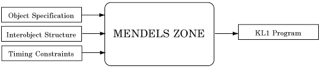

(61) A Concurrent Program Development System: MENDELS ZONE
Machine: Multi-PSI
Environment: PIMOS, SIMPOS
Language: ESP, KL1
Source Code: 10 MB
Documents: Manual (English/Japanese)
Overview
MENDELS ZONE is a software development system for concurrent
programs.
Features
The system takes as input several kinds of specifications for MENDEL
objects and generates correct KL1 programs semi-automatically.
Functions
- object generation: Specifications, based on equational logic, for
MENDEL objects are verified in parallel using term rewriting
techniques and transformed into MENDEL objects automatically.
- object composition: MENDEL objects are represented by high-level
Petri nets. Users compose these objects with the aid of a graphical
MENDEL net editor.
- object adjustment: Composed objects are automatically adjusted to
satisfy supplied temporal logic specifications, which specify only
timing constraints of composed objects. The object adjustment is
carried out by parallel automated reasoning techniques with Petri nets
and temporal logic.

References
- Honiden, S., et al.: An Application of Structural Modeling and
Automated Reasoning to RealTime Systems Design, The Journal of
Real-Time systems, Vol1, No.3, pp.313-331(1990).
- Ohsuga, A., et al.: Metis: A Term Rewriting System Generator, in
Software Science and Engineering(Nakata, I.and Hagiya, M.eds.),
pp.1-15, World Scientific(1991).
- Uchihira, N., et al.: Verification and Synthesis of Concurrent
Programs Using Petri Nets and Temporal Logic, Trans. IEICE,
Vol.E73, No.12, pp.2001-2010(1990).
FTP
- A Concurrent Program Development System: MENDELS ZONE [1,001K]

www-admin@icot.or.jp